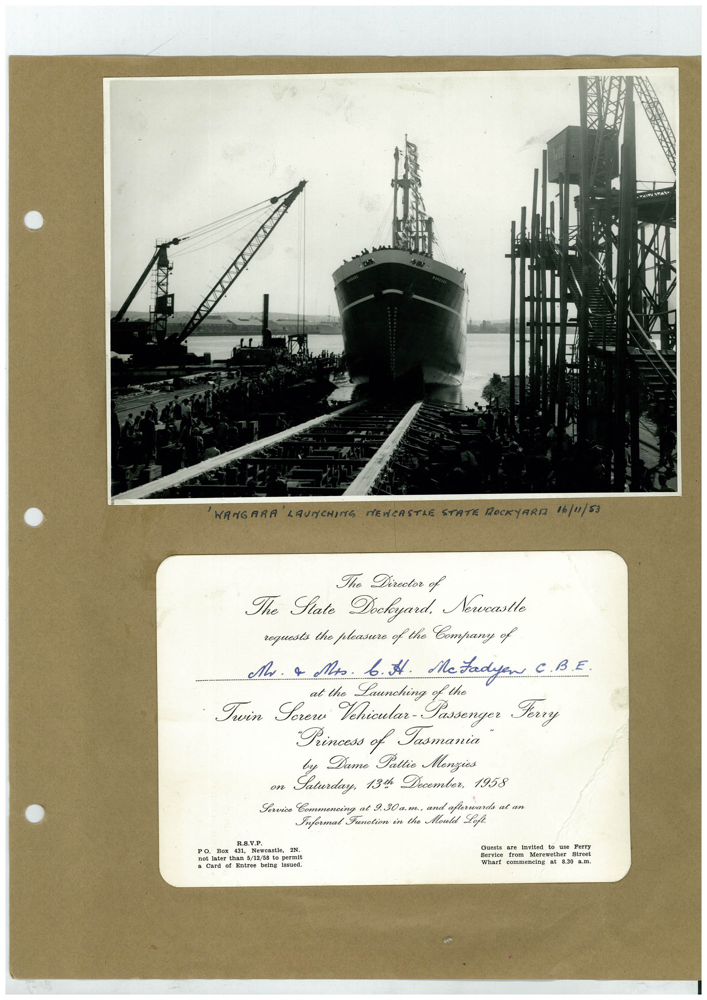

Book 1 · scan 102


Description
Transcription
Context
Review notes
Compare the machine draft with the scan. Handwriting and names need human review.
Artifacts
Edit the artifacts field in this note’s frontmatter to change these records. This summary is generated.
B01-S102-A01 — Photo & Invitation — Book 1, scan 102
Types: Photo, Invitation
Scope: Whole scanned page; individual items can be split out during review.
Caption: Not mapped yet.
Caption source: Not recorded yet.
Caption status: unmapped
Machine transcription
'WANGARA LAUNCHING NEWCASTLE STATE MOCKYARD 16/"1/53 The Director of The Fate Dockeyard. Newcastle requests the pleasure of the Company of Mr. a Mos. b. I. McFadyen C. B.E. Launching of the Twin Serer Vehicular-Passenger Ferry Princess of Jasmania Dame Pattie Menzies Laterdug 730 Recordan 1958 R.S.V.P. PO. Box 431, Newcastle, not later than 5/12/58 to bermit Card of Entree being issued. Guests are invited to use perts Service from Merewether Street Wharf commencing at 8.30 8.11.